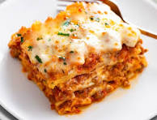

Lasagna

Extra Easy Lasagna
Lasagna is a classic Italian dish known for its rich layers of flavor and hearty texture.
To start, you'll need to prepare a savory meat sauce by browning ground beef or sausage
with onions and garlic, then simmering it with crushed tomatoes, tomato paste, and a blend
of herbs like basil and oregano. Meanwhile, cook the lasagna noodles according to package
instructions until al dente, and make a creamy ricotta cheese mixture by combining ricotta,
egg, and a handful of grated Parmesan.
Assemble the lasagna by spreading a thin layer of meat sauce at the bottom of a baking dish,
followed by a layer of noodles, then a layer of the ricotta mixture, and a generous sprinkle
of shredded mozzarella cheese. Repeat the layers until all ingredients are used, finishing with
a top layer of meat sauce and a final sprinkle of mozzarella and Parmesan. Bake in a preheated
oven at 375°F (190°C) for about 45 minutes, or until the top is bubbly and golden. Let the lasagna
rest for a few minutes before serving to allow the layers to set, making for a perfectly sliceable
and satisfying meal.
Ingredients
- 1 lb ground beef or sausage
- 1 onion, finely chopped
- 3 cloves garlic, minced
- 1 can (28 oz) crushed tomatoes
- 2 tbsp tomato paste
- 1 tsp dried basil
- 1 tsp dried oregano
- 9 lasagna noodles
- 1 cup ricotta cheese
- 1 egg
- 1/2 cup grated Parmesan cheese
- 2 cups shredded mozzarella cheese
- Salt and pepper to taste
Steps
- Preheat your oven to 375°F (190°C).
- In a large skillet, brown the ground beef or sausage over medium heat. Add the chopped onion and minced garlic, cooking until the onion is translucent.
- Stir in the crushed tomatoes, tomato paste, dried basil, and oregano. Season with salt and pepper. Simmer the sauce for about 20 minutes, stirring occasionally.
- Meanwhile, cook the lasagna noodles according to package instructions until al dente. Drain and set aside.
- In a bowl, combine the ricotta cheese, egg, and grated Parmesan cheese. Mix well.
- To assemble the lasagna, spread a thin layer of meat sauce at the bottom of a baking dish. Place a layer of noodles over the sauce, then spread a portion of the ricotta mixture over the noodles. Sprinkle with shredded mozzarella cheese.
- Repeat the layering process with the remaining ingredients, ending with a final layer of meat sauce and a generous topping of mozzarella and Parmesan cheese.
- Bake in the preheated oven for about 45 minutes, or until the top is bubbly and golden. Let the lasagna rest for a few minutes before serving.